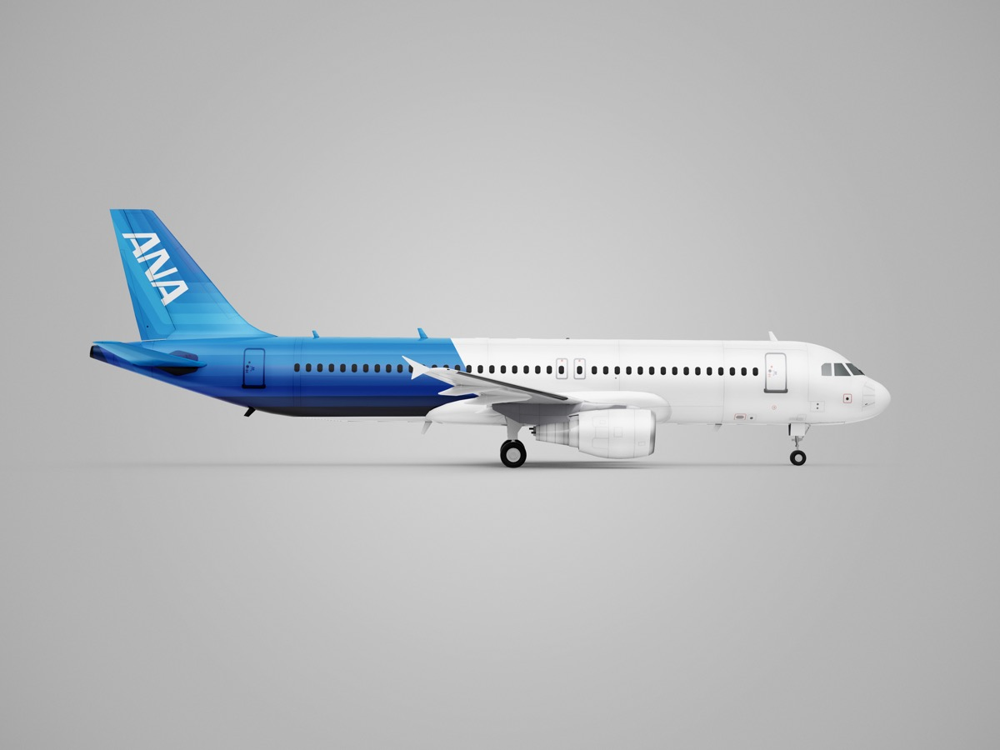
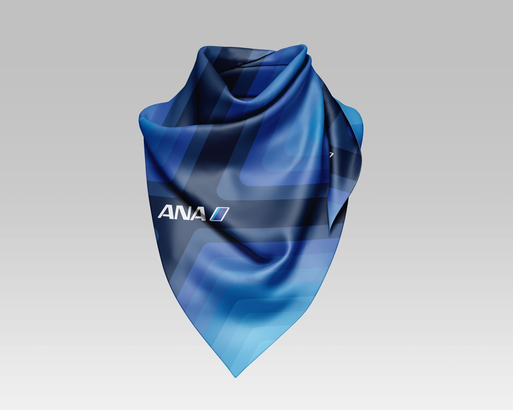
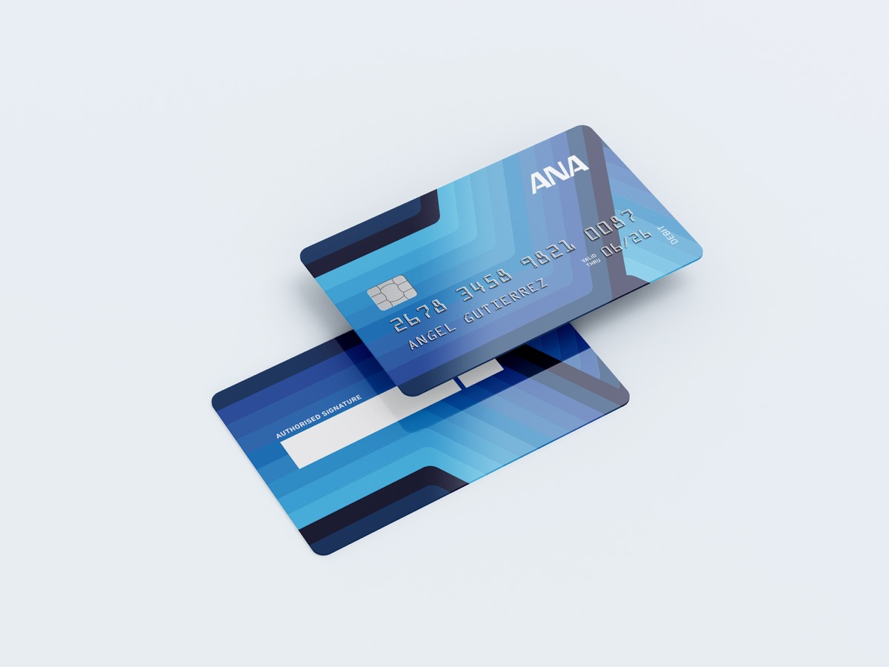
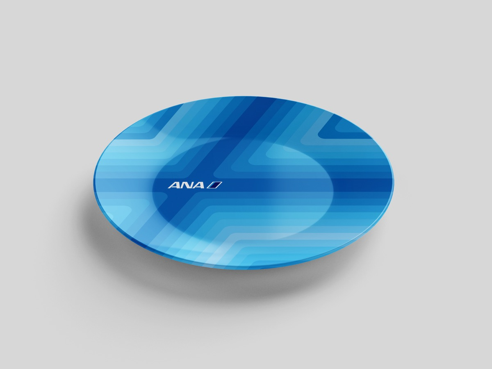
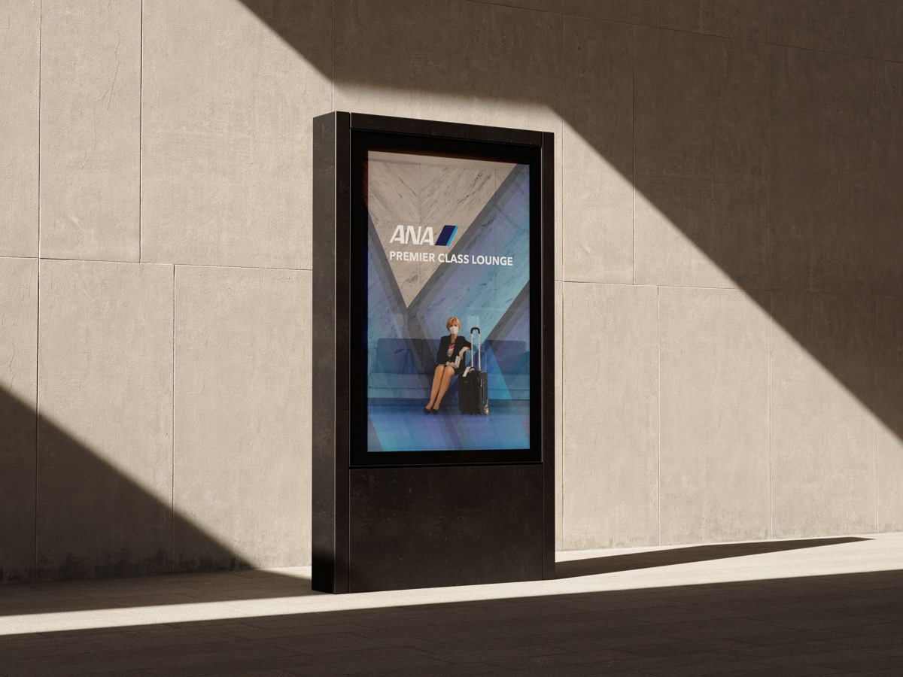

Proyecto
Rediseño Aerolínea ANA
En este rediseño me enfoqué en crear un diseño innovador que transmitiera los valores de la ANA, además, este fue el primer proyecto realizado con el método Design Thinking.
Galería
Imágenes del proyecto




